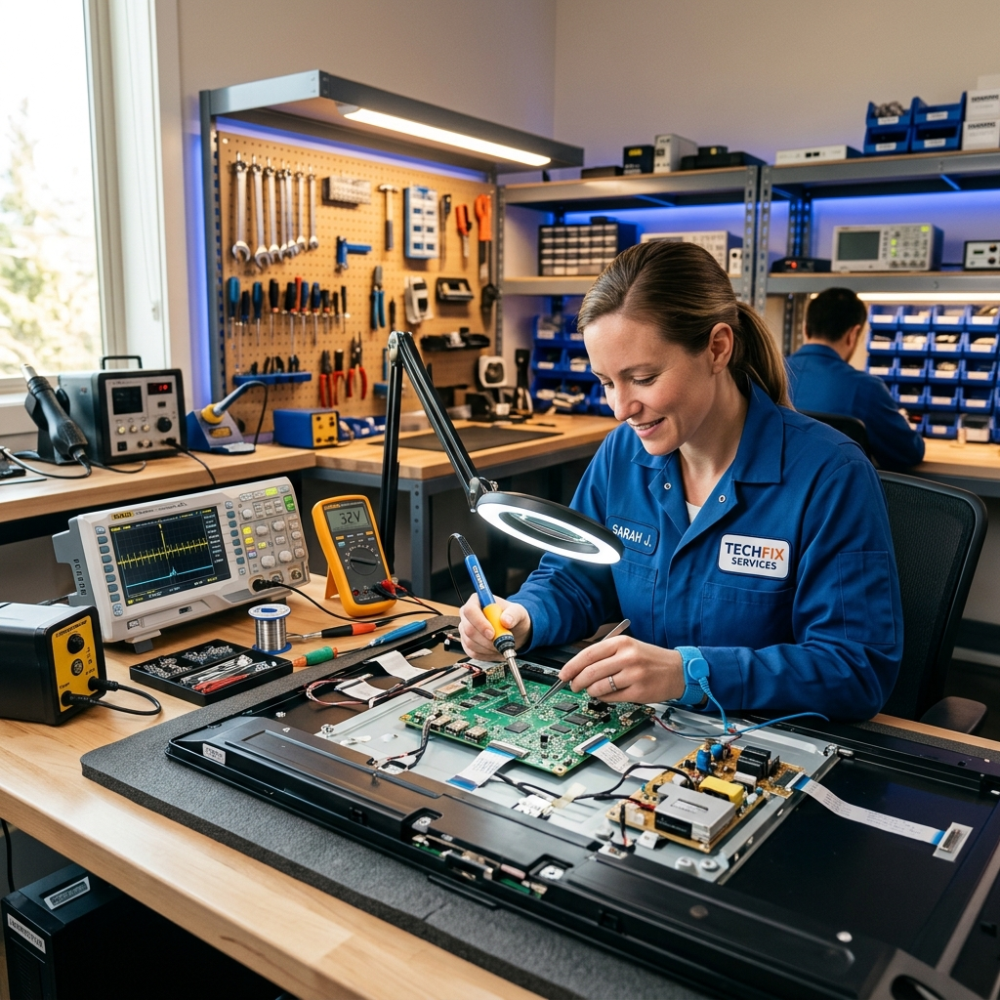
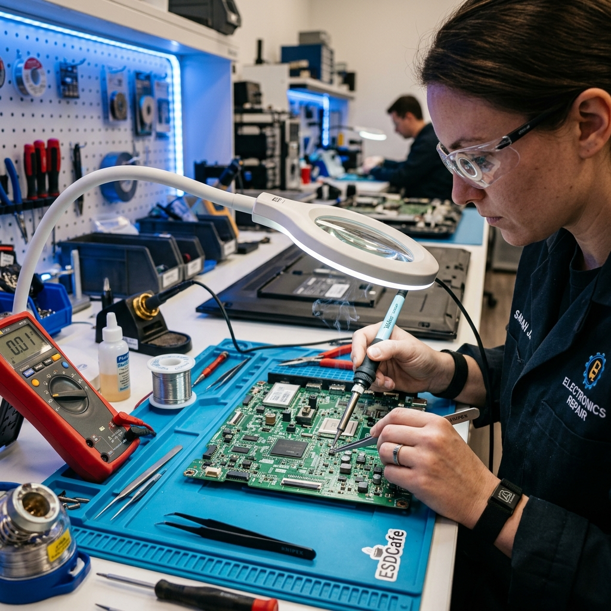
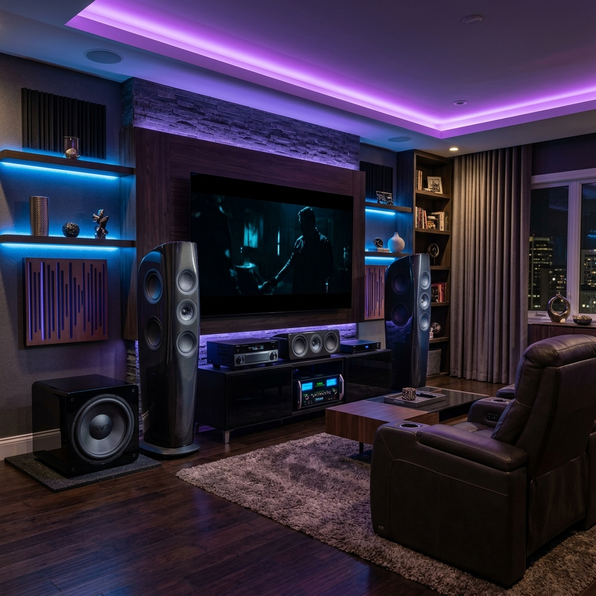
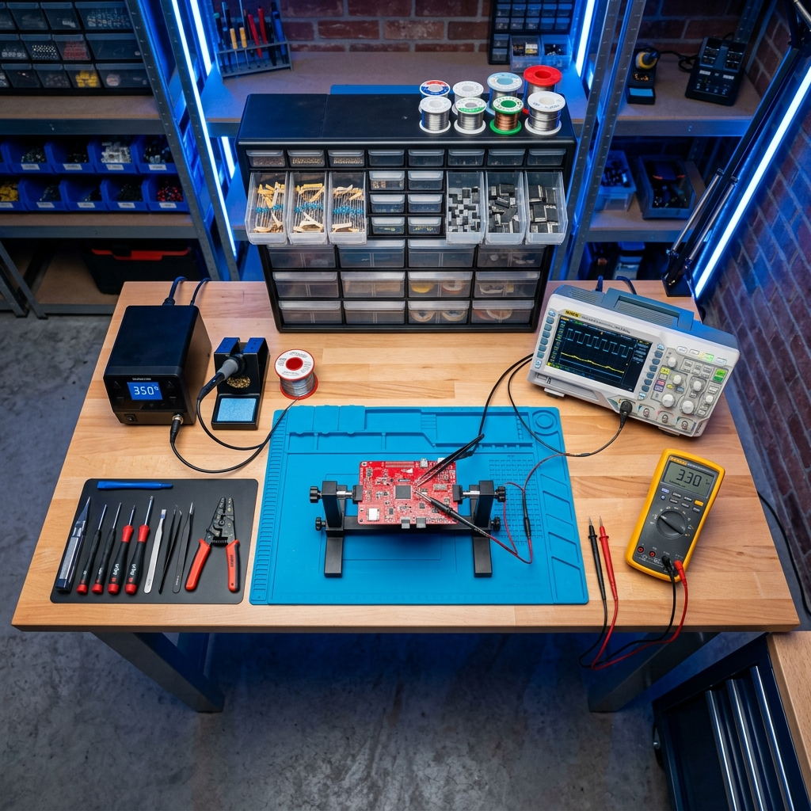
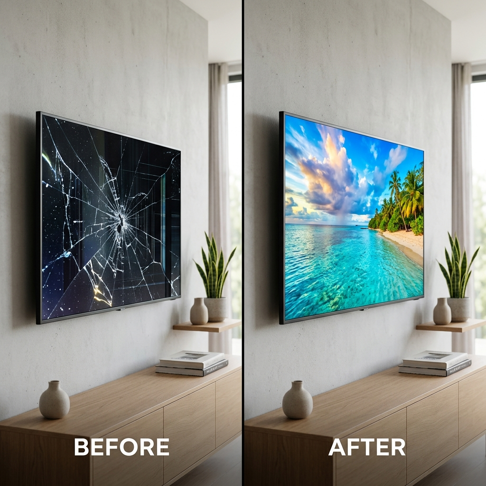
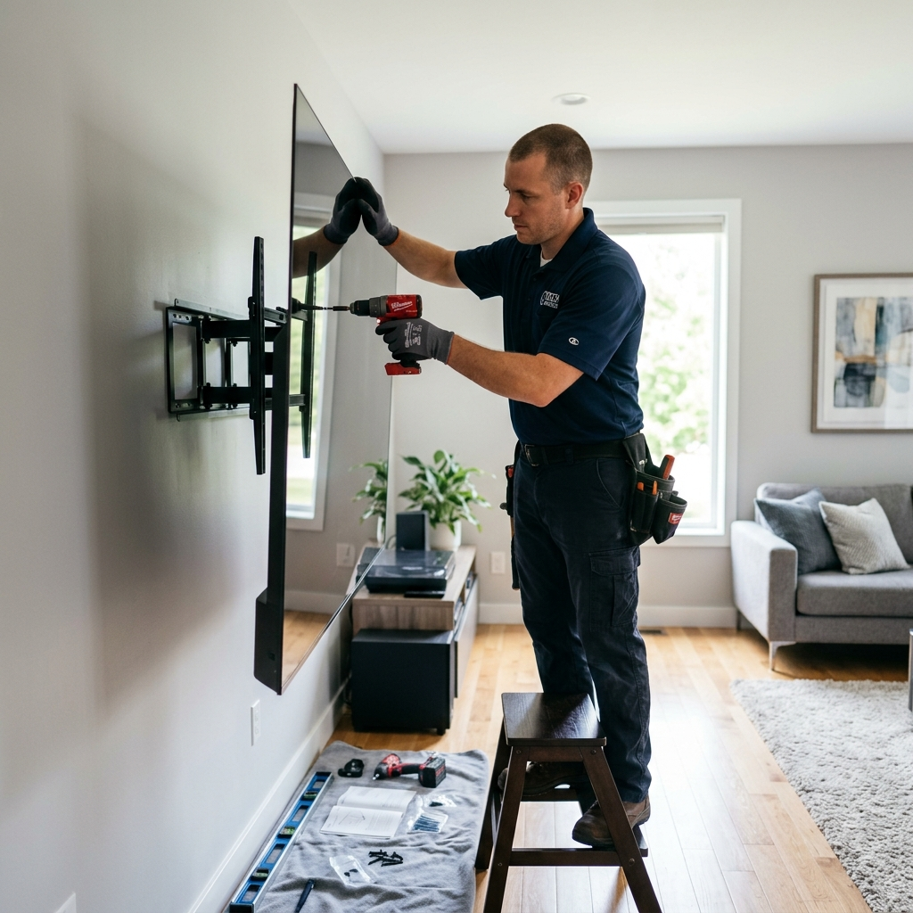

Recuperamos tus equipos con servicio técnico profesional, rápido y garantizado. Diagnóstico preciso y reparación de alta calidad.

Ofrecemos servicios especializados de reparación con los más altos estándares de calidad y garantía.
Reparamos televisores LED, OLED, QLED y Smart TV de todas las marcas. Solución garantizada para pantalla, tarjeta y retroiluminación.
Reparación profesional de teatros en casa, receptores AV, consolas de mezcla y equipos de audio profesional.
Restauración y reparación de parlantes, subwoofers, tweeters y sistemas de altavoces para sonido perfecto.
Servicio especializado en amplificadores de audio, etapas de potencia, preamplificadores y sistemas de amplificación.
Diagnóstico electrónico avanzado con equipos de última generación para identificar fallas con precisión total.
Programas de mantenimiento para prolongar la vida útil de tus equipos. Limpieza, calibración y revisión completa.
Instalación profesional de televisores, teatros en casa y sistemas de audio con configuración óptima personalizada.
Más de una década brindando soluciones confiables en reparación electrónica.
Personal altamente capacitado con certificaciones en electrónica avanzada.
Utilizamos únicamente repuestos originales y de alta calidad garantizada.
Todos nuestros servicios incluyen garantía por escrito para tu tranquilidad.
Diagnóstico y respuesta en el menor tiempo posible. Valoramos tu tiempo.
Tarifas justas y transparentes. Presupuesto sin compromiso antes de reparar.
Honestidad y transparencia en cada reparación. Tu confianza es nuestra prioridad.
Servicio técnico directamente en tu hogar u oficina, sin complicaciones.
Asesoría técnica dedicada para resolver todas tus dudas sobre tus equipos.
Un proceso claro y transparente para que tu equipo vuelva a funcionar como nuevo.
Comunícate por WhatsApp, teléfono o formulario web. Cuéntanos qué le sucede a tu equipo y te orientamos de inmediato.
Realizamos un diagnóstico profesional detallado para identificar la falla con precisión y te entregamos un presupuesto claro.
Nuestros técnicos certificados reparan tu equipo utilizando repuestos de calidad y herramientas de última generación.
Tu equipo queda como nuevo con garantía escrita. Realizamos pruebas exhaustivas antes de la entrega para tu total satisfacción.
La satisfacción de nuestros clientes es nuestro mejor aval.
Conoce de cerca nuestro taller, herramientas y los resultados de nuestro trabajo profesional.





Experiencia comprobada con las principales marcas de electrónica del mercado.
Contáctanos ahora y recibe un diagnóstico rápido y profesional. Nuestros técnicos están listos para ayudarte.
Resolvemos tus dudas más comunes sobre nuestros servicios.
El tiempo depende del tipo de falla. Generalmente, las reparaciones simples se realizan en 24-48 horas. Reparaciones más complejas pueden requerir 3-5 días hábiles. Siempre te informamos el tiempo estimado después del diagnóstico.
Sí, todas nuestras reparaciones incluyen garantía escrita. El periodo de garantía varía según el tipo de servicio, generalmente entre 3 y 6 meses, tanto en mano de obra como en repuestos utilizados.
¡Por supuesto! Ofrecemos servicio técnico a domicilio para diagnóstico, reparación e instalación. Nuestros técnicos van equipados con las herramientas necesarias para resolver la mayoría de fallas directamente en tu hogar.
Ofrecemos un diagnóstico con un costo accesible que se descuenta del valor total de la reparación si decides proceder. Contáctanos para conocer las tarifas actualizadas según tu tipo de equipo.
Reparamos prácticamente todas las marcas del mercado: Samsung, LG, Sony, Panasonic, Philips, TCL, Hisense, JBL, Bose, Pioneer, Yamaha, Harman Kardon, entre muchas otras. Si tu marca no aparece, contáctanos igualmente.
Trabajamos con repuestos originales y de alta calidad compatibles. Siempre te informamos sobre las opciones disponibles y sus diferencias para que tomes la mejor decisión para tu equipo y presupuesto.
Completa el formulario y te contactaremos a la brevedad con un presupuesto personalizado.